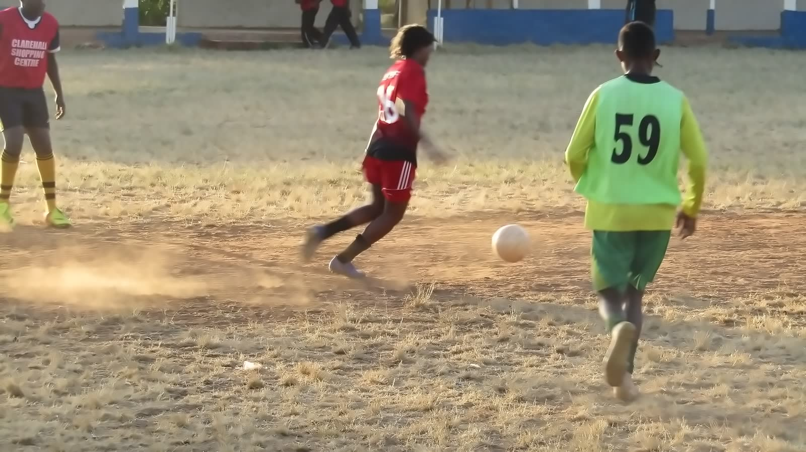

What we expect from our Number 1.
Our goalkeeping philosophy is built around six essential characteristics that define a modern, complete goalkeeper.
Brave
Willing to make bold decisions, take responsibility in 1v1 situations, and command the penalty area without hesitation.
Intelligent
Able to read the game, anticipate dangerous through-balls, adjust starting angles, and organise defensive lines early.
Communicative
Able to provide early, clear, relevant, and constructive instructions that organise teammates without shouting needlessly.
Comfortable With the Ball
Possessing clean technical distribution with both feet, capable of playing through pressure and initiating team build-up.
Decisive
Able to make rapid, assertive decisions under high match pressure — whether to hold, parry, punch, or sweep.
Resilient
Able to respond positively to mistakes: Mistake → Learn → Reset → Respond, rather than letting one error define the game.
Comprehensive goalkeeper curriculum.
Our goalkeeper curriculum develops five interconnected areas woven into every training cycle.
Technical
- Set position & footwork dynamics
- Handling, catching & ball security
- Low, medium & high diving mechanics
- Parrying into safe zones
- Distribution (throwing, side-volley, passing)
- Cross management & high claim timing
- 1v1 spread & smother techniques
Tactical
- Starting position relative to ball & defenders
- Angle management & depth control
- Sweeper-keeper positioning & anticipation
- Defensive set-piece organisation
- Decision-making in transition moments
- Supporting the defensive backline
- Scanning: Ball → Teammates → Opponents → Space
First Attacker
- Receiving backpasses under pressure
- Passing with both feet accurately
- Short build-up options into midfield
- Medium & diagonal driven distribution
- Long counter-attacking release
- Recognising when to slow or speed up play
- "What is my best option after regaining possession?"
Physical
- Coordination, balance & body control
- Agility & foot speed across the goal-line
- Reaction speed & reflexive movement
- Explosive lateral push-offs
- Jumping, aerial reach & safe landing
- Quick recovery back to feet
- Movement efficiency & injury prevention
Psychological
- Unshakable concentration across 90 minutes
- Self-confidence & emotional composure
- Courage in physical duel moments
- Resilience after conceding a goal
- Self-awareness & video analysis review
- Leadership presence inside the 18-yard box
The GK Cycle
- Observe: Assess player positions & danger
- Understand: Read the flight & opponent cues
- Decide: Choose save, catch, sweep, or pass
- Act: Execute with 100% commitment
- Review: Reset defensive shape immediately
Possession starts with the gloves.
Modern football requires goalkeepers to contribute actively to the team's build-up. At Sporting Pearls, our goalkeepers are taught to be the extra outfield player in possession.
Goalkeepers are challenged to constantly ask: "What is my best option after I regain possession? Can we counter immediately, or do we control the tempo through patient build-up?"

“Every save is a question. I answer with my body, not my words. Then I start the attack.”
— Moses Wanjala · Senior GKLeading from the goal-line.
The goalkeeper has the clearest view of the entire pitch. Communication must be structured across three key moments.
Before the Action
Organise the backline, adjust compact distances, alert fullbacks to blindside runners, and set up set-piece walls early.
During the Action
Provide clear, decisive information: "Keeper's!", "Away!", "Man on!", "Turn!". Give teammates immediate awareness.
After the Action
Reset and reorganise the defensive block immediately. Encourage teammates, stay positive, and focus on the next phase.
Stage-by-stage progression.
From first rolling saves at U9 to tactical mastery and senior competition at U17 and beyond.

U9 — Discover
- Movement & coordination games
- Basic catching & handling confidence
- Rolling & underhand distribution
- Fun dives on soft sand / grass
- Emphasis on enjoyment & no fear of ball
U11 — Explore
- Footwork patterns & ready position
- Clean handling & W-catch technique
- Basic low diving & body shape
- Overhand throws & side distribution
- Introduction to 1v1 close-down angles

U13 — Develop
- Starting position relative to ball line
- Angle management & depth control
- High cross assessment & catching point
- Backpass reception under midfield pressure
- Defensive unit communication
U15 — Performance
- Advanced positioning in 11v11 matches
- 1v1 block, spread & recovery saves
- Cross management in crowded boxes
- Driven distribution & counter-releases
- Transition speed & sweeper-keeper roles

U17 / Senior — Transition
- Pre-match tactical preparation & scouting
- Game management & tempo regulation
- Performance video review & analytics
- Commanding leadership in high-stakes games
- Pathway into senior leagues & trials
Never isolated from the team.
Goalkeeper training at Sporting Pearls does not isolate keepers in a corner for 90 minutes. We combine individual technical work with small-group functional practices and full team tactical sessions.
- 🧤 Individual Practices: Fine-tuning handling, footwork and diving mechanics.
- 👥 Small-Group Practices: Goalkeepers working directly with defenders and strikers.
- ⚡ Functional Practices: Cross defence, cutback saves, and set-piece scenarios.
- 🏟️ Integrated Team Training: Playing out from the back in 11v11 tactical phases.
Progressive Match Scenarios
Six actions. One standard.
Prevent and deal with shots using safe, reliable handling and diving.
Protect the goal and organise the defensive unit before danger develops.
Contribute accurately to team possession, build-up, and passing lines.
Anticipate situations, recognise opponent triggers, and control depth.
Provide clear, early, and calm instructions to maintain unit compact shape.
Take full responsibility, inspire confidence, and recover positively from setbacks.
Ready to own the penalty box?
Whether you are starting your journey between the posts or looking to develop elite distribution and shot-stopping, Sporting Pearls welcomes dedicated goalkeepers ready to learn, play, and lead.